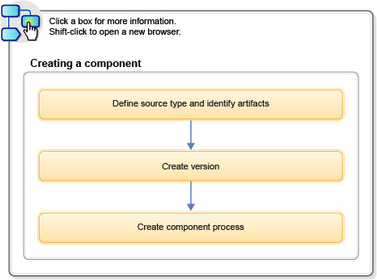

Getting started with creating components
Components are the centerpiece of the IBM DevOps Deploy (Deploy) deployment engine. Components associate deployable items (artifacts) with processes that deploy them.
The following diagram summarizes the basic steps for creating components:

The source type identifies the artifacts that the component uses. The source type can be almost anything that is associated with a software project. Sources are defined with source plug-ins.
Component versions are created when artifacts are imported into the artifact repository, CodeStation. Version history is maintained and components can be rolled back to earlier versions.
Component processes consist of user-configured steps that operate on components, typically by deploying them. Process steps are provided by automation plug-ins. Processes can be created with the process design editor or by using the command-line interface.